Introduction
Learn how to use particles to make a laser beam 'blaze a trail' through space.
Spaceship
Start from an empty Scratch project (rpf.io/scratch-new — remember to delete the cat sprite).
Paint a new sprite, naming it 'Spaceship':
Zoom in until the chequered background becomes large, then select the Line tool, change the Outline colour to a bright blue, and draw a triangle facing to the right. Click the Select tool, select the triangle, and give it a bright blue Fill color:
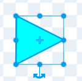Copy and paste that triangle, give the new triangle a white Fill colour, shrink it a little bit and position it so it overhangs the back of the first triangle:
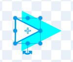Paint a black backdrop.
What code should we add so that the spaceship always points towards the mouse-pointer?
Add that code, click the green flag, and move your mouse-pointer around the stage. Does the spaceship turn to face your mouse-pointer?
Time to arm our spaceship with a laser.
Laser
Paint a second sprite, naming it 'Laser'.
Zoom in, select the Line tool, pick a bright blue Outline colour, then click the 'horizontal gradient' button:
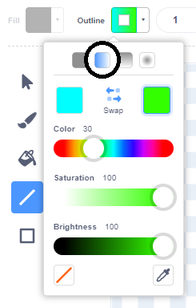By default you'll see a green colour on the right — change this to 'transparent' by clicking the transparent button:
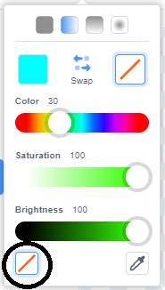
Click the 'Swap' button, so that our line changes from transparent on the left to blue on the right:
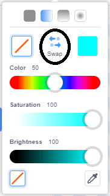Set the thickness to 6 and draw a horizontal line, about 6 chequered squares wide. Does your laser beam look like this?
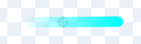Click the Spaceship sprite, then the Code tab. Add code to create a clone of Laser whenever the space key is pressed, with a wait 0.1 seconds 'cool down' afterwards.
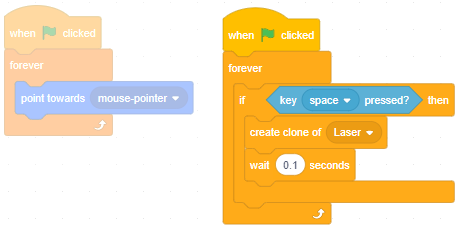Since our spaceship can turn in any direction, what do we need to remember when we create Laser clones?
Click the Laser sprite, add the usual hide-template-show-clone code. Also add a go to Spaceship and a point towards mouse-pointer:
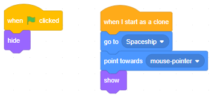Click the green flag and smash that space bar while moving the mouse around. What do you see?
Add code to make the laser beam fly across the stage, and test it out.
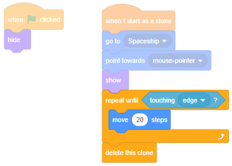Particles
Paint a third sprite, naming it 'Particle'.
Zoom in, select the Circle tool, pick a bright blue Fill colour and set the Outline thickness to 0. Draw a circle about a quarter the size of a chequered square:
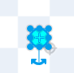In the Code tab, add the usual hide-template-show-clone blocks.
When a laser beam flies through space, we want it to create a particle at each point along the path. So, in the Laser sprite's repeat-loop, add a create clone of Particle.
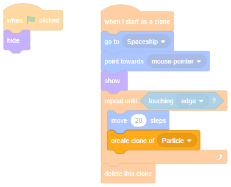
Now the Particle clone needs to know where it should be placed. Could we use a go to Laser?
We need to use a 'list' to store positions. A list is just a number of variables in order — you can ask for, say, the 1st item in the list, or the 4th, etc, and you can add items to a list, or remove items from it.
Click 'Make a List' (the button in the 'Variables' section). Name the list 'particle positions' (for all sprites).
Just before we create clone of Particle, add the Laser's x and y position to this list.
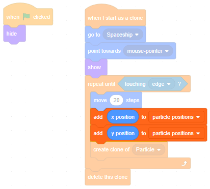Click the green flag and then hit the space bar. What happens?
That's right. Why?
The first item in the list will be the first x position that the Laser was at, and we can read it using item 1 of particle positions. Drag this block onto the code area (anywhere is fine... this is just 'test code') and click it — what happens?
We can delete the first item in the list using the delete 1 of particle positions block. Click it, and watch what happens to the list. Is the first item now blank?
When we delete the first item in the list, the second item becomes the new first item! Check this yourself — look at the second and third items in the list, delete the first again, and see that the items 'move up'.
Add a delete all of particle positions and click it. What happens?
Snap that delete all of particle positions under the green flag clicked, so that we always start from a clean slate, then click on the Particle sprite.
Here we want to set the Particle clone's x and y position from the items in the list. Since we add x then y, we must set x then y. Remember to delete each item after using it.
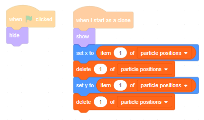Click the green flag then hit space bar. What happens?
Do you also see how numbers are added to the list and immediately deleted from it, very quickly? That's because, as soon as the Laser adds its x and y position, a Particle is created which 'eats' them.
Now that we understand how the list works, it can be hidden — uncheck the checkbox.
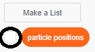Drift
Particles look better if they drift randomly. After a particle clone has started, point it in a random direction, repeatedly move it 2 steps (10 times), then delete it.
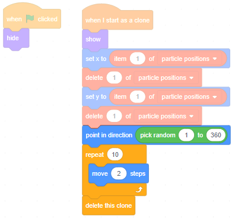Click the green flag then hit the space bar. What happens?
Good. Now for some final polish. Drag the spaceship into a corner so our laser beam can fly across a nice long diagonal.
Click back to the Particle sprite and change the loop to repeat 30 times. Inside the loop, change the ghost effect by 3 so the particles gradually fade out.
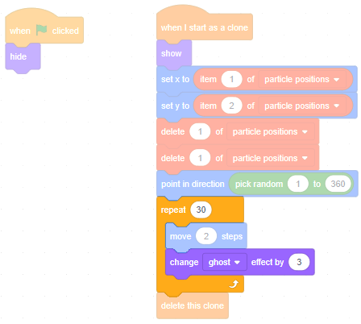Click the full screen button, click the green flag and hit the space bar. Watch how single shots look, and watch how things look when you fire a volley of laser beams.
Next steps
Exit full screen, and save your game.
See if you can make it better.
Could you make an 'Asteroids' game where you have to shoot and destroy asteroids before they collide with your ship?
What ideas can you come up with?
What did you think of this module?
I didn't like it

It was OK

I loved it